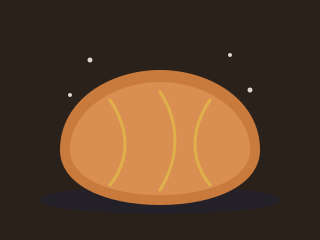

Masa madre clásica
Harina de trigo entero, 24 horas de fermentación, corteza gruesa y miga húmeda.
Horneado nocturno · Masa madre natural
Amasamos al anochecer, dejamos que la masa madre haga su trabajo lento durante la noche y horneamos justo antes del amanecer. Así el pan llega a tu mesa con la corteza todavía tibia.
Cada hogaza sigue el mismo camino, sin prisa, durante nueve horas de trabajo silencioso.
Mezclamos harina de grano entero, agua, sal y masa madre viva. Sin levadura comercial, sin prisa.
La masa reposa toda la noche a temperatura fresca, desarrollando sabor y una miga abierta y ligera.
Entra al horno de piedra cuando el barrio todavía duerme. El vapor forma la corteza crujiente.
Sale del horno y se enfría lo justo antes de abrir la puerta. Primero en llegar, primero en elegir.
Una selección corta, cambia según la temporada y lo que traiga el mercado.

Harina de trigo entero, 24 horas de fermentación, corteza gruesa y miga húmeda.
Un veinte por ciento de centeno integral, girasol y linaza tostada. Sabor profundo, ligeramente ácido.
Cambia cada mes: hoy es naranja y anís. Producción limitada, disponible solo los fines de semana.
El pan del día suele agotarse antes del mediodía. Llega temprano o encárgalo con anticipación.